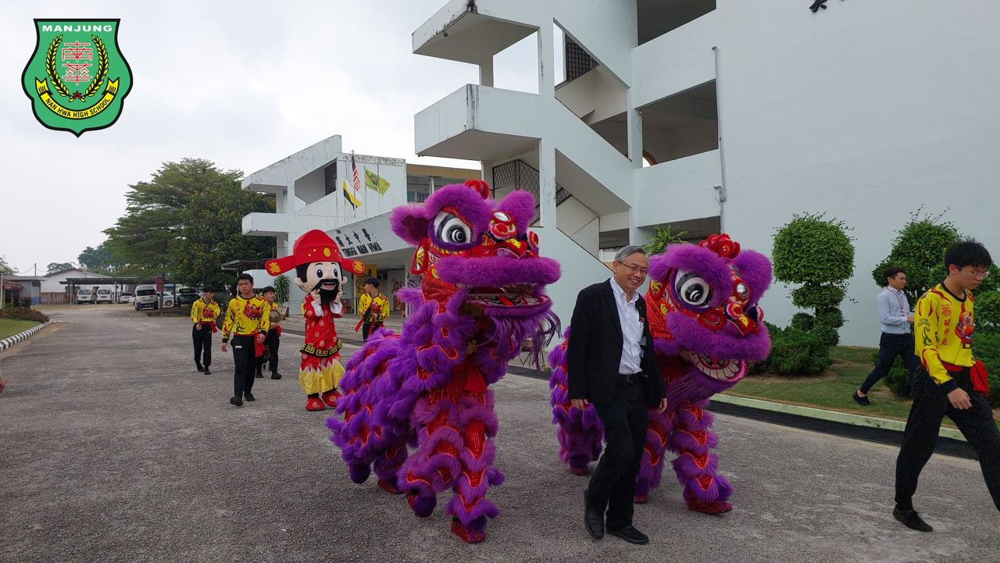
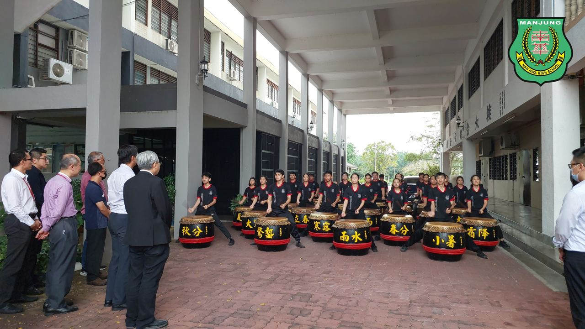
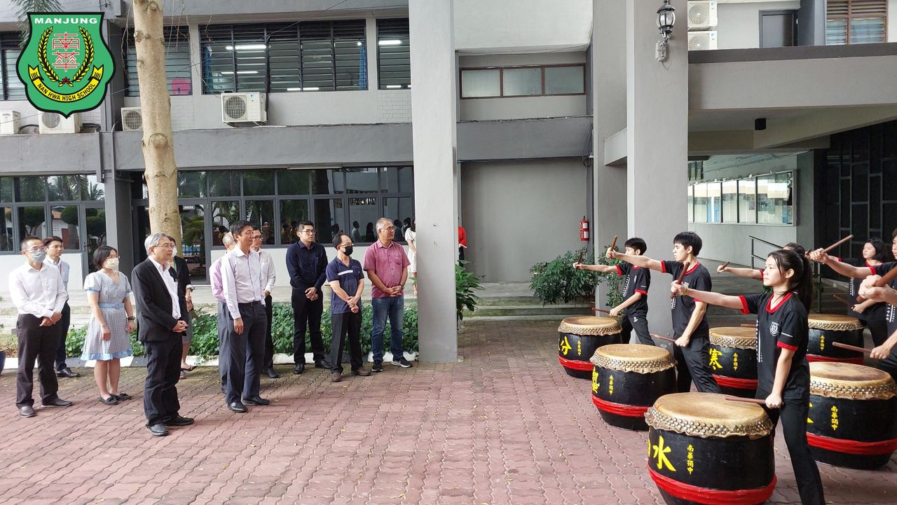
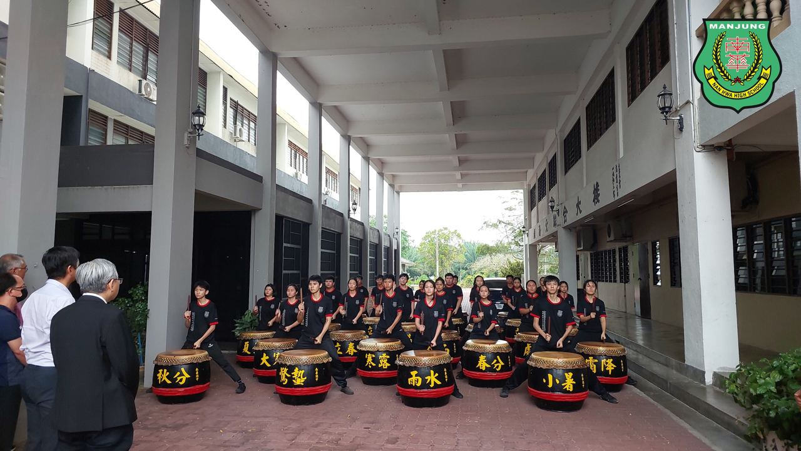
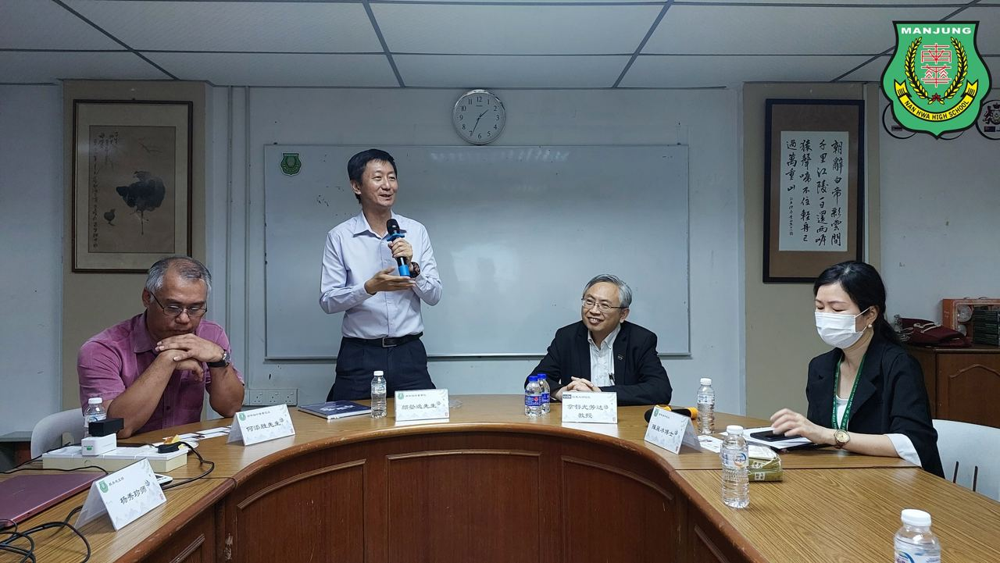
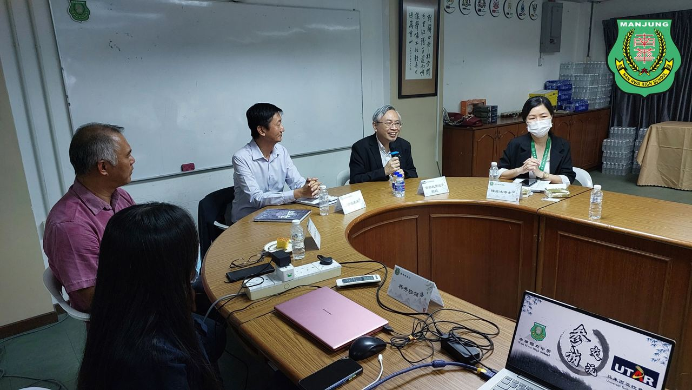
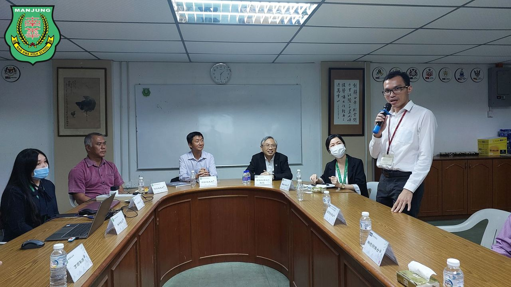
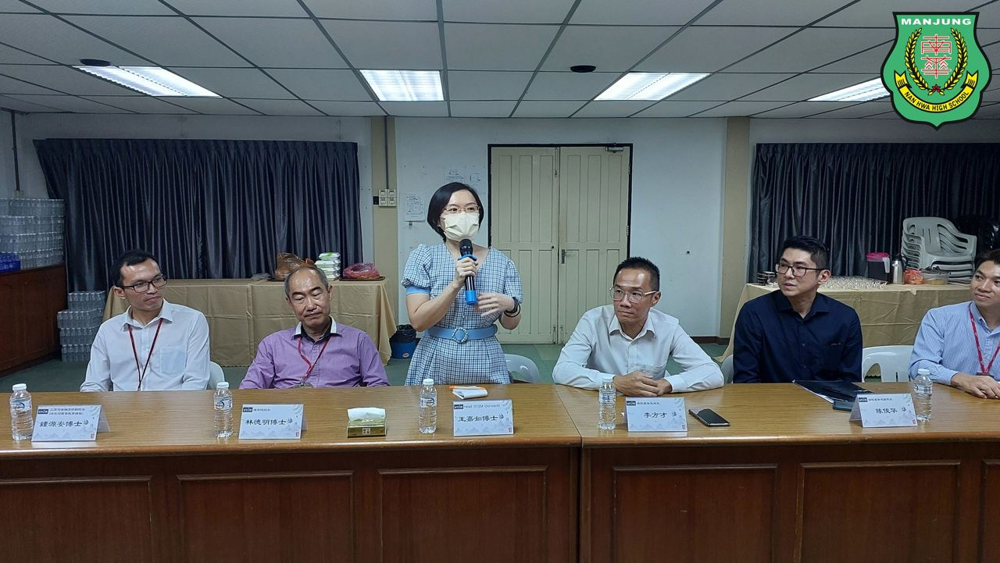

拉曼大学校长拿督尤芳达教授
拉曼大学校长拿督尤芳达教授
率团参访南华独中共商建教合作
拉曼大学校长拿督尤芳达教授于4月19日率领代表团参访曼绒南华独中，并获得该校以浓厚的中华文化的醒狮团以及二十四节令鼓迎宾方式热情接待 。与会者包括有拉曼大学校长拿督尤芳达教授、理学院院长林德明博士、工商与金融学院副院长钟源安博士、王嘉如博士等人；南华独中则有董事长颜登逸先生、董事总务何添胜先生、吴明月董事、校长陈丽冰博士及其行政团队。双方希望通过此次见面会谈共同商讨更深入的合作关系、扩大合作范围。
南华独中董事长颜登逸先生在交流会上表示，全霹雳独中都在面临着学生来源的挑战，而南华独中为此在十年前提出“培养‘迎领’21世纪的领袖人才”的办学愿景，并佐以“学会读书·学会做人”的办学方针，亟力培育出具备自主学习、独立思考、批判性思维及有能力解决问题的学生。颜董事长透露，该校于十年来在教育改革的路上经过多番尝试与调整，除了重点培养学生的学术学习与联课活动，于去年也推出了校本课程与高中选修课。颜董事长说道：“透过完善的硬体设备，让学生在能够从实作中学习解决问题的能力，更要锻炼学生强大的内心素质，以健全的身心面对时代洪流的挑战。”
拉曼大学校长拿督尤芳达教授针对锻炼学生的内心素质表示非常认同，并表示拉曼大学也十分注重大学生的心智锻炼，例如规定学生走进社区服务以及进入企业实习，更指出两校的教育理念有相似之处，希望培育出不止做好完全准备的学生，更要抱持着持续学习的成长心态，以应付瞬息万变的世界。拉曼大学秉持着“取之社会，用之社会”的办学理念，自创校以来通过致力于教学、研究、社会责任等方面取得卓越成就，而此行参访南华独中，便是希望能够建立起长期合作关系，例如将从130多项专业课程中，挑选出合适的引进南华独中，委派师资以及组织团队给予讲座或授课，促进两校之间的建教合作。
南华独中校长陈丽冰博士表示，自南华独中推出“五大领域·十八门课程”的校本课程以及高中选修课以后，意识到师资培训的重要性，为此十分感谢拉曼大学及时送来的好消息，透过更深入的合作关系与扩大合作范围，希望能定期派老师到大学去学习，或是指派专业课程教授莅临南华独中授课指导，让该校师生都能获益。南华独中接下来会着重中华文化活动的推展，甚至开启跨文化的合作，希望能将深厚的文化素养渗透到校园各个角落，打造一所文化气息浓厚的校园。
#拉曼大学 #建教合作 #中华文化 #参访交流
#南华独中 #曼绒 #实兆远







